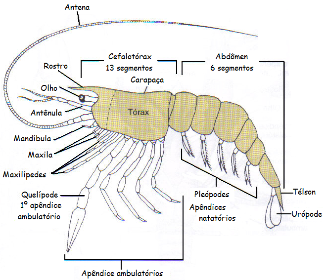
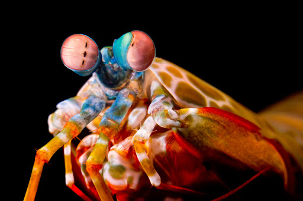
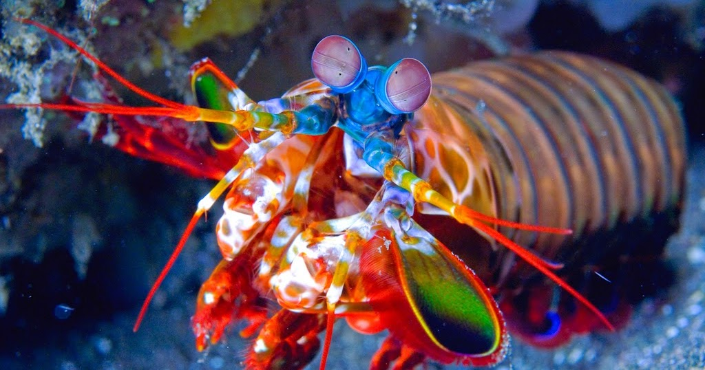
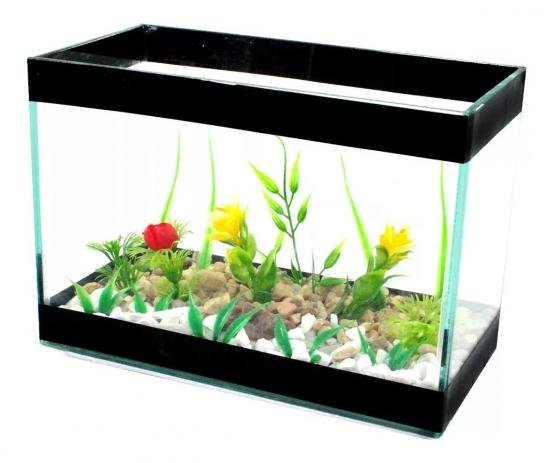

Fatos sobre o Stomatopoda
Os estomatópodes são predadores ativos que caçam presas com o auxílio de um sentido de visão muito apurado e capaz de interpretar polarização no espectro ultravioleta e infravermelho). Apresentam uma grande variação de tamanho, que pode ir de poucos milímetros até aproximadamente 40 cm nas espécies maiores. Eles vivem em fundo consolidado, lodoso ou ainda arenoso, onde cavam seus buracos ou aproveitam-se dos orifícios deixados por outros animais para neles se instalar. São animais exclusivamente carnívoros, alimentando-se de camarões, caranguejos, moluscos, peixes e até mesmo outros da mesma ordem. O segundo par de patas, muito desenvolvido, é usado tanto para atacar a presa como para se defender. O urópodo, quando aberto, também funciona para defesa, como um escudo, fechando a galeria em que o animal esteja instalado. A fêmea desova no local onde se abriga e, em caso de perigo, enrola os ovos como uma bola, prendendo-os junto ao corpo até encontrar um abrigo mais protegido

Também conhecidas como esquilas ou lagosta-boxeadora, espalhadas pelas costas dos mares tropicais e subtropicais. Além das patas, elas apresentam uma silhueta característica, devido ao grande comprimento aparentemente de seu abdómen. Os ovos ficam ligados por uma massa gelatinosa que a mãe carrega contra o ventre até que eclodem, limpando-os sem parar.
Visão
Esses animais possuem o mais complexo sistema de visão de cores do mundo animal, pois enxergam 12 cores primárias, correspondentes aos 12 pigmentos distintos presentes em sua retina.
Nossos olhos possuem três tipos desses receptores - que correspondem à luz azul, verde e vermelha -, que nos permitem perceber o espectro de cores que vemos. Os cães contam com apenas dois tipos de cones (verde e azul), e é por isso que eles vêm tons de azul, verde e um pouco de amarelo. Muitos anfíbios, répteis, aves e insetos possuem quatro tipo de cones, o que significa que espécies dessas classes conseguem ver cores que o nosso cérebro é incapaz de processar. Algumas espécies específicas de borboletas e possivelmente pombos possuem cinco cones de percepção de cor, o que aumenta ainda mais a quantidade de pigmentos que eles são capazes de perceber. O sistema de visão dos estomatópodes possui doze cones sensíveis à luz e outros quatro que filtram a luz (16 cones no total), o que lhes permite ver cores polarizadas e imagens multiespectrais.
nome científico
O. scyllarus é uma das espécies de estomatópodes (tamburutaca, ou tamarutaca), chegando a 18 cm. De coloração verde, com pernas laranjas e com a carapaça com estampas tipo leopardo
Animalia
Animalia, Animal ou Metazoa é um reino biológico composto por seres vivos pluricelulares, Eucariontes, heterotróficos, cujas células formam tecidos biológicos, com capacidade de responder ao ambiente (possuem tecido nervoso) que os envolve ou, por outras palavras, pelos animais.
A maioria dos animais possui um plano corporal que se determina à medida que se tornam maduros e, exceto em animais que metamorfoseiam, esse plano corporal é estabelecido desde cedo em sua ontogenia quando embriões. O estudo científico dos animais é chamado zoologia, que tradicionalmente estudava, não só os seres vivos com as características descritas acima, mas também os protozoários. Como resultado de estudos filogenéticos, consideram-se os Protistas como um grupo separado dos animais.
Artrópode
Artrópodes (Arthropoda, do grego arthros (ἄρθρον), articulado e podos (ποδός), pés) são um filo de animais invertebrados que possuem exoesqueleto rígido e vários pares de apêndices articulados, cujo número varia de acordo com a classe.
Compõem o maior filo de animais existentes, representados por animais como os gafanhotos (insetos), as aranhas (aracnídeos), os caranguejos (crustáceos), as centopeias (quilópodes) e os piolhos-de-cobra (diplópodes). Têm cerca de um milhão de espécies descritas, e estima-se que os representantes deste filo equivalem a cerca de 84% de todas as espécies de animais conhecidas pelo homem.[1] Possuem uma ampla gama de cores e formatos, e no que diz respeito ao tamanho, alguns vão desde as formas microscópicas, como no plâncton (com menos de 1/4 de milímetro), até crustáceos com mais de 3 metros de espessura.
Crustáceo
Os crustáceos (lat. crusta, carapaça dura) são animais invertebrados artropódes. Entre eles estão alguns dos animais mais comuns que conhecemos, como siris, caranguejos , tatuzinhos-de-jardim, lagostas, cracas e camarões.Há mais de 67.000 espécies descritas de Crustáceos da fauna atual, e provavelmente um número 5 ou 10 vezes maior de espécies estão ainda para serem descobertas e catalogadas. Eles se apresentam como os animais mais abundantes, diversificados e com maior distribuição nos oceanos.
Malacostraca
Malacostraca é uma classe do subfilo Crustacea, pertencente ao filo Arthropoda, com aproximadamente 40.200 espécies, sendo que grande parte destas é de conhecimento popular, como exemplo os caranguejos, lagostas, camarões e o krill.
Hoplocarida
Hoplocarida Calman, 1904, é uma subclasse de malacóstracos marinhos bentônicos, de hábito predador (carnívoro raptorial), cujo tamanho varia de 2 até 30 cm. Caracterizam-se pela presença de um segundo par de maxilípedes modificado em uma garra raptorial expandida e subquelada, utilizada para forragear, escavar tocas e para perfurar ou esmagar as presas.
ordem
Os estomatópodes são predadores ativos que caçam presas com o auxílio de um sentido de visão muito apurado e capaz de interpretar polarização no espectro ultravioleta e infravermelho). Apresentam uma grande variação de tamanho, que pode ir de poucos milímetros até aproximadamente 40 cm nas espécies maiores.
fatos interessantes
olhos do Stomatopoda
Esses animais possuem o mais complexo sistema de visão de cores do mundo animal, pois enxergam 12 cores primárias, correspondentes aos 12 pigmentos distintos presentes em sua retina.
Nossos olhos possuem três tipos desses receptores - que correspondem à luz azul, verde e vermelha -, que nos permitem perceber o espectro de cores que vemos.
Os cães contam com apenas dois tipos de cones (verde e azul), e é por isso que eles vêm tons de azul, verde e um pouco de amarelo.
Comportamento
Os camarões louva-a-deus são altamente inteligentes. Eles reconhecem e se lembram de outras pessoas pela visão e pelo olfato, e demonstram habilidade para aprender. Os animais têm um comportamento social complexo, que inclui lutas ritualizadas e atividades coordenadas entre membros de um par monogâmico. Eles usam padrões fluorescentes para sinalizar uns aos outros e possivelmente a outras espécies.
Dieta e caça
Na maior parte, o camarão mantis é um caçador solitário e recluso. Algumas espécies perseguem ativamente as presas, enquanto outras esperam dentro do covil. O animal mata desdobrando rapidamente suas garras raptoriais com uma aceleração surpreendente de 102.000 m / s2 e velocidade de 23 mps (51 mph). O ataque é tão rápido que ferve a água entre o camarão e sua presa, produzindo bolhas de cavitação. Quando as bolhas entram em colapso, a onda de choque resultante atinge a presa com uma força instantânea de 1.500 newtons . Portanto, mesmo que o camarão erre seu alvo, a onda de choque pode atordoá-lo ou matá-lo. A bolha em colapso também produz luz fraca, conhecida como sonoluminescência. Presas típicas incluem peixes, caramujos, caranguejos, ostras e outros moluscos. Os camarões louva-a-deus também comem membros de sua própria espécie.
